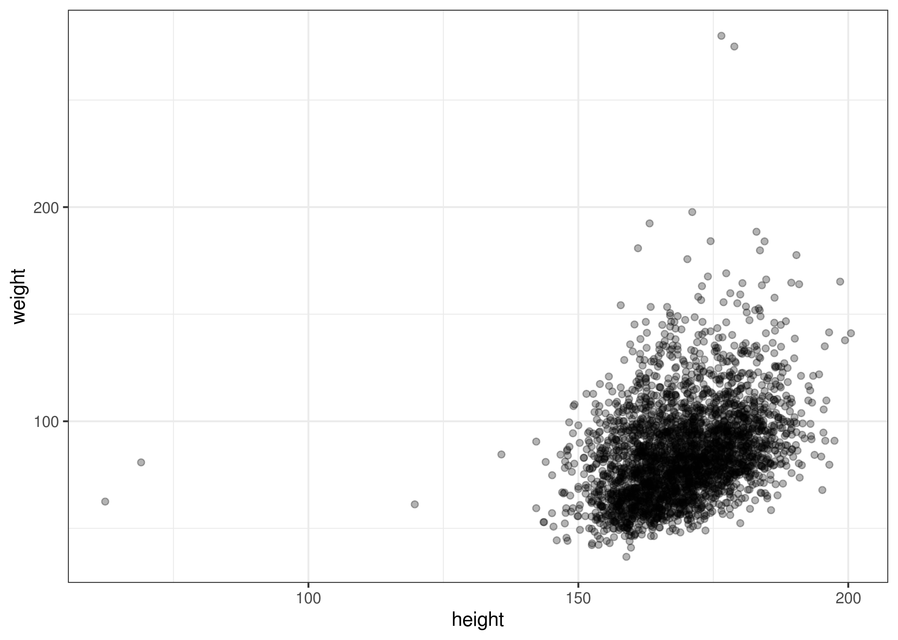
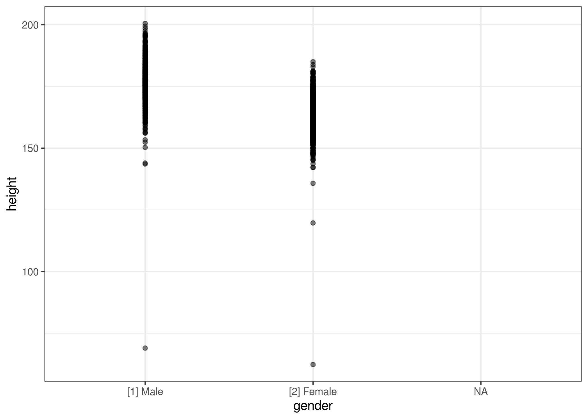
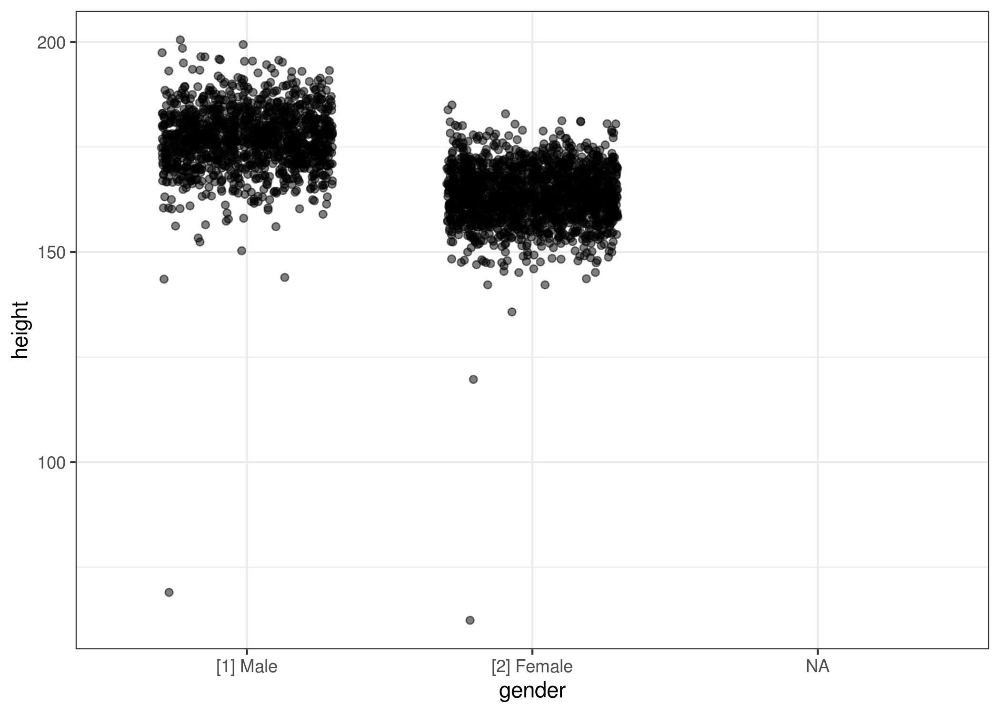
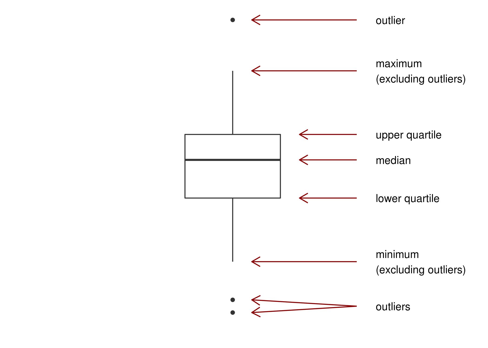

6 Continuous Data
A continuous variable is a numerical variable that can (at least theoretically) take on an infinite and uncountable number of possible values.
6.1 Examples
- age
- height
- speed
- blood pressure
- heart rate
6.2 How to describe continuous data
When dealing with continuous data, we are often interested in two aspects:
- location
- spread
6.2.1 Location
The location of continuous data is often described by one of two metrics: the mean (or average) and the median. For completion, these are briefly defined below. For a more in-depth discussion of the mean and the median, see (Sullivan 2017) pages 50-57
6.2.1.1 Mean
The mean of a variable measured in a sample is also referred to as the sample mean or average. It is simply calculated as the sum of all observed values divided by the number of values. If we are interested in a variable \(X\), the average is denoted \(\bar{X}\) (read “\(X\) bar”). So \(\bar{X} = \frac{1}{n}\sum_{i=1}^n X_i\).5
6.2.1.2 Median
The median is the middle point of the data. It is found by writing down all observations in order, then eliminating the most extreme pair (i.e. the smallest and largest values). Repeat until only one observation, or one pair of observations, is left. If you’re left with one observation, congratulations, you found the median. If you’re left with a pair, the median is the average of the two.
6.2.2 Spread
Once we have an idea of the location of a continuous variable, the next natural question is how large the spread (or variation) is.
We will here briefly introduce four (but kind of only three…) metrics for the spread of the data: variance, standard devaition, range, and interquartile range.
6.2.2.1 Variance/Standard Deviation
The variance of a continuous variable is in many ways “the average (squared) deviation from the mean”. It is calculated as \(\text{Var}(x) = \frac{1}{n-1} \sum_{i=1}^n (x_i - \bar{x})^2\). So larger variance means larger spread, and vice versa.
The standard deviation is simply the square root of the variance: \(\text{SD}(x) = \sqrt{\frac{1}{n-1} \sum_{i=1}^n (x_i - \bar{x})^2}\). Therefore, there’s a one-to-one correspondance between the variance and the standard deviation. This also means that when the standard deviation is large, so is the spread.
A natural question is then: why do we need both? The variance is nice for mathematical reasons, as we will see later. It also provides this nice interpretation as an average, which we lose when converting to the standard deviation (because of taking the square root). On the other hand, the standard deviation is nice because it kind of encapsulates the same idea as the variance, but preserves the unit. We’ll have a more detailed discussion of this in later sections.
6.2.2.2 Range
The range is simply the difference between the largest and the smallest value. Hopefully it is clear that this indeed is a measure for how spread out the data is. But it is not always a super useful measure – you could have a sample where 293 observations are the exact same, and the last two observations are very, very different. In such a case, the range will indicate quite the spread, while in truth the data is not spread out very much at all.
6.2.2.3 Interquartile Range (IQR)
The interquartile range is simply the difference between the first and the third quartile. I.e. \(\text{IQR} = Q_3 - Q_1\). This is also the size of the box in a box plot (see section 6.3.2).
6.3 How to visualize continuous data
My favorite graphs to use with continuous data are scatter plots, boxplots, and histograms.
6.3.1 Scatter Plots
A scatter plot is only really useful when you are considering the relationship between two variables where at least one is continuous. For example, consider the variables height and weight from the SHOW data. A scatter plot shows potential relationships between the two. Unsurprisingly, it seems that there is a positive correlation between the two – i.e. when one goes up, so does the other.

You can also utilize scatter plots when one of the variables is categorical. For example, we could be interested in the relationship between height and gender.

In this case, it can be beneficial to add a bit of jitter to the plot in the direction of the categorical variable.

Even with a bit of jitter, it might be really hard to make anything of a scatter plot in this case, simply because we have “too much” data. In such a case, a boxplot might be a better choice.
6.3.2 Boxplots
Boxplots are great when you have a lot of data. They show the data through a set of summaries, namely the quartiles, and indicates if there are any outliers. Below are boxplots for the height of the SHOW population by gender.
You can use the figure below to decipher the box plot:

As you see on the boxplots of the SHOW data, it is a great tool to visualize continuous data when you have a lot of it. In a simple figure we can see that
- the median height is greater for men than women
- there is generally a shift upwards for men compared to women
- the 75% tallest men are all taller than 75% of women (compare the bottom of the box for men with the top of the box for women)
and much more.
One thing I haven’t told you is the answer to a very important, very hard question: “how do we decide if a data point is an outlier?” We will simply adopt the practice that a data point is an outlier if it is more than 1.5 times the range of the box from the box. I.e. an observation is an outlier if it is greater than \(Q_3 + 1.5\cdot (Q_3 - Q_1)\) or less than \(Q_1 - 1.5\cdot (Q_3 - Q_1)\).
6.3.3 Histogram
At first, the histogram looks a lot like a bar chart, but there are a few very important differences. Before we go into details, lets take a look at a histogram. Below is a histogram of the depression scores in the SHOW data set.
The main differences from a bar chart is that
- there are no gaps on the x-axis
- the relative area of a bar is the proportion of your sample that falls in the interval corresponding to that bar
Later on, we will use the histogram to answer questions like “what is the probability a randomly chosen individual from the SHOW population has a BMI greater than 40?” or “between 20 and 30?” etc. This is simply done by dividing the area of the bars that are specified (for example all bars with BMI greater than 40) with the total area.
The histogram will be super important to us moving forward, so make sure you know how to decipher it!
References
Sullivan, L. M. 2017. Essentials of Biostatistics in Public Health. Jones & Bartlett Learning. https://books.google.com/books?id=8dhLDgAAQBAJ.